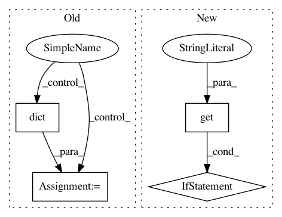

1753e20f4ba805cb94d3646d472c53bc8d990a2a,py/server.py,PostHandler,post,#PostHandler#,252
Before Change
if ptype in ["image", "text"]:
p.update(dict(content=args["data"][0]["content"], type=ptype))
else:
p["content"] = dict(data=args["data"], layout=args["layout"])
p["type"] = "plot"
register_pane(self, p, eid)
After Change
tornado.escape.to_basestring(self.request.body)
)
if req.get("func") is not None:
try:
req, endpoint = self.func(req)
if (endpoint != "events"):
// Process the request using the proper handler
self.handlers[endpoint].wrap_func(self, req)
return
except Exception:
// get traceback and send it back
print(traceback.format_exc())
return self.write(traceback.format_exc())
eid = extract_eid(req)
p = pane(req)
register_pane(self, p, eid)
In pattern: SUPERPATTERN
Frequency: 3
Non-data size: 4
Instances
Project Name: facebookresearch/visdom
Commit Name: 1753e20f4ba805cb94d3646d472c53bc8d990a2a
Time: 2017-10-05
Author: jju@fb.com
File Name: py/server.py
Class Name: PostHandler
Method Name: post
Project Name: scipy/scipy
Commit Name: f3e0dcf70387c8ca4aecd83f57260a4f5bde82d1
Time: 2018-09-11
Author: kaistriega@gmail.com
File Name: scipy/optimize/tests/test_linprog.py
Class Name: LinprogCommonTests
Method Name: test_linprog_cyclic_bland
Project Name: dpressel/mead-baseline
Commit Name: da1e8c2de9b265dcb18256a0a087165faf138b42
Time: 2019-01-14
Author: blester125@users.noreply.github.com
File Name: python/baseline/pytorch/seq2seq/model.py
Class Name: EncoderDecoderModelBase
Method Name: predict